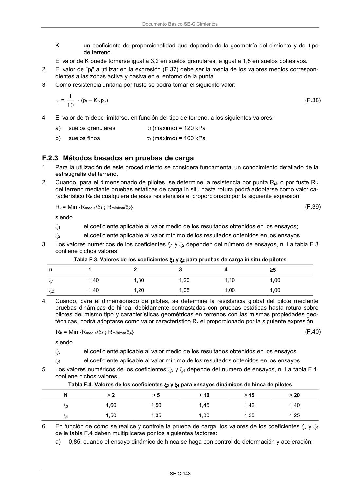

DB-SE-C Cimientos · edición 2019-12-20 · capa oficial
Documento DB-SE-C-oficial · SHA-256 del PDF a71133f4b0dca253e45ea3071c70f2a512354bcc5cd841bf89b1a502f567ac5e
Copia fiel del PDF fuente · Fuente oficial
Ficha de la disposición en la fuente oficial
Formatos: JSON del segmento · Markdown
F.2.3 Métodos basados en pruebas de carga
1
Para la utilización de este procedimiento se considera fundamental un conocimiento detallado de la
estratigrafía del terreno.
2
Cuando, para el dimensionado de pilotes, se determine la resistencia por punta Rpk o por fuste Rfk
del terreno mediante pruebas estáticas de carga in situ hasta rotura podrá adoptarse como valor ca-
racterístico Rk de cualquiera de esas resistencias el proporcionado por la siguiente expresión:
Rk = Min {Rmedia/1 ; Rmínima/2}
(F.39)
siendo
1
el coeficiente aplicable al valor medio de los resultados obtenidos en los ensayos;
2
el coeficiente aplicable al valor mínimo de los resultados obtenidos en los ensayos.
3
Los valores numéricos de los coeficientes 1 y 2 dependen del número de ensayos, n. La tabla F.3
contiene dichos valores
Tabla F.3. Valores de los coeficientes 1 y 2 para pruebas de carga in situ de pilotes
n
1
2
3
4
5
1
1,40
1,30
1,20
1,10
1,00
2
1,40
1,20
1,05
1,00
1,00
4
Cuando, para el dimensionado de pilotes, se determine la resistencia global del pilote mediante
pruebas dinámicas de hinca, debidamente contrastadas con pruebas estáticas hasta rotura sobre
pilotes del mismo tipo y características geométricas en terrenos con las mismas propiedades geo-
técnicas, podrá adoptarse como valor característico Rk el proporcionado por la siguiente expresión:
Rk = Min {Rmedia/3 ; Rmínima/4}
(F.40)
siendo
3
el coeficiente aplicable al valor medio de los resultados obtenidos en los ensayos
4
el coeficiente aplicable al valor mínimo de los resultados obtenidos en los ensayos.
5
Los valores numéricos de los coeficientes 3 y 4 depende del número de ensayos, n. La tabla F.4.
contiene dichos valores.
Tabla F.4. Valores de los coeficientes 3 y 4 para ensayos dinámicos de hinca de pilotes
N
2
5
10
15
20
3
1,60
1,50
1,45
1,42
1,40
4
1,50
1,35
1,30
1,25
1,25
6
En función de cómo se realice y controle la prueba de carga, los valores de los coeficientes 3 y 4
de la tabla F.4 deben multiplicarse por los siguientes factores:
a)
0,85, cuando el ensayo dinámico de hinca se haga con control de deformación y aceleración;
Documento Básico SE-C Cimientos
SE-C-144
b)
1,10, cuando se utilice una fórmula de hinca basada en la medida de las compresiones casi-
elásticas de la cabeza del pilote durante el proceso de la hinca;
c)
1,20, cuando se utilice una fórmula de hinca sin medir el desplazamiento de la cabeza del pilo-
te durante el proceso de la hinca.
7
Cuando se realicen pruebas de carga estáticas o dinámicas, para ayudar en la determinación de la
resistencia de hundimiento, se podrán reducir los coeficientes de seguridad, de acuerdo con los cri-
terios establecidos, para cada situación de dimensionado, en la tabla 2.1.
